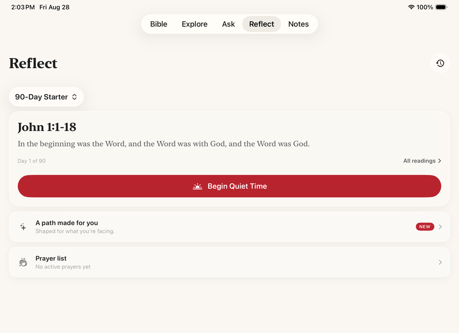
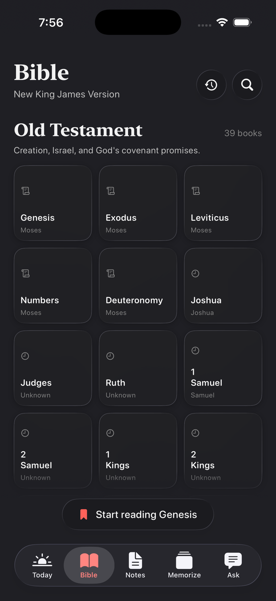
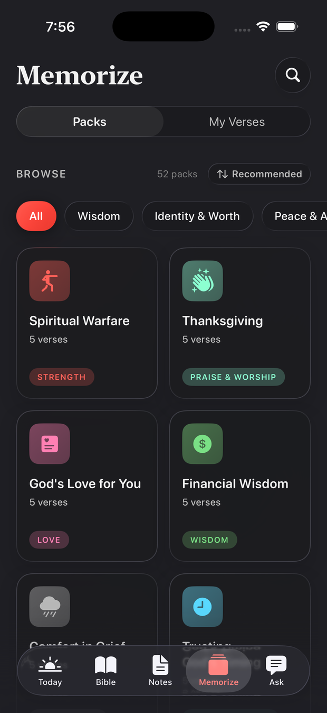
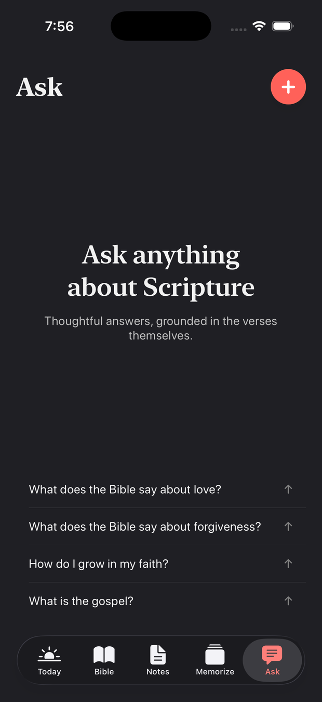

Listen
Scripture read aloud, with the words lighting up in time with the narration and the page following on its own. Six narrators, a sleep timer, adjustable pace, AirPlay, and it keeps playing on the lock screen.
Cardinal is built for reading Scripture, sitting with it, and talking to God. There is no feed to scroll, no streak to protect, and nobody watching what you read.
Reading the Bible is free, always. No account, no sign-in.

Bible apps have become social platforms, full of feeds and features that distract you from simply reading the Bible.
Cardinal is different. It was built for one person, alone with Scripture, for as long as they want to stay there. Everything in it is judged by whether it helps you read, or pulls you away from reading.
That is why so much is missing on purpose.
Read
Cardinal opens on the Berean Standard Bible. No setup, no account, no choosing a plan before you are allowed to read a verse.

Quiet Time
You are never handed a chapter and left to it. Each day is a curated passage of fifteen to twenty-five verses, the natural scene the text is built around.
Your archive is searchable, and it is private. Nothing keeps score.
Memorize
Two ways to practice, and a deck that quietly works out which verses you are still learning.

Ask
Everyone hits a verse they do not understand. Ask, and get an answer drawn from the passage in front of you: cross-references, word studies, historical context.

Everything below is included for everyone, with no subscription, unless it says otherwise.
Scripture read aloud, with the words lighting up in time with the narration and the page following on its own. Six narrators, a sleep timer, adjustable pace, AirPlay, and it keeps playing on the lock screen.
Seventeen journeys flown place to place over real 3D satellite terrain. Paul's voyages, Abraham's road, the Exodus, Passion Week. Read each stop's story, hear it narrated, share it as a card of the place itself.
Structured the way sermons are actually preached: big idea, main points with their own verses, application, ways to serve. Group them by series. For sermons you hear and sermons you give.
A workspace for preparing one. Gather verses, illustrations and quotes as you read, shape an outline, keep an archive. Editing a study is part of Pro; reading and exporting one never is.
A Verse of the Day, today's Quiet Time passage, or your Memorize progress, pinned to the home and lock screen, so the first thing you see in the morning is the Word.
Four glances: the verse, the next passage, what is playing, and a recall drill. It works cold, with your phone nowhere nearby. The complication is just the verse, not a number telling you how you are doing.
The same app, laid out for the larger screen. Good for a long sitting at a desk, or for reading two translations side by side.
The eight bundled translations read and search with no connection at all. Memorizing, highlighting and note-taking work anywhere. Audio, the streamed translations and Ask need a signal.
Cardinal will not write your sermon: the study, the structure, and the words stay yours. A promise in the source code
Thirteen of them are free, and they always will be. Reading Scripture never requires a subscription.
Licensed from their publishers. Each one comes with a free day to try, once, so you can read it before deciding. Read two side by side and see where they differ.
Every menu, book name and answer follows the language your phone is set to.
Eight of the nine also read a Bible in that language. A Korean translation is not licensed yet, so Korean currently reads with an English text.
What you underline, what you pray about, and what you ask are some of the most private things a person has. Cardinal is built so that they stay that way.
Reading the Bible is free and stays free. Pro pays for the things that cost money to run: licensed translations, and the AI behind Ask.
Free
A subscription
The App Store shows what Cardinal Pro costs where you are. A study you have already written stays readable and exportable even if a subscription lapses.
That is the whole app. Everything else was left out on purpose.
Download on the App Store